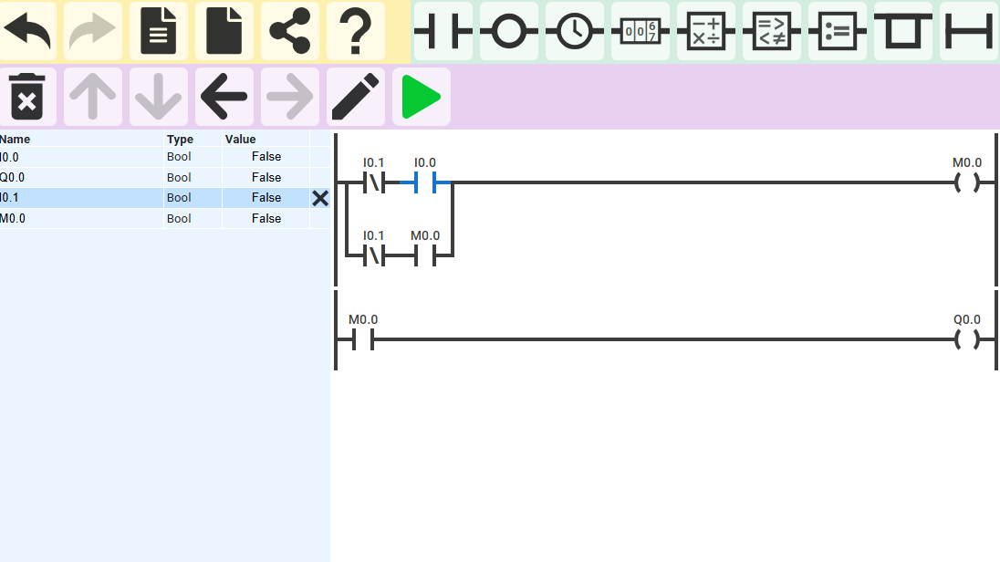
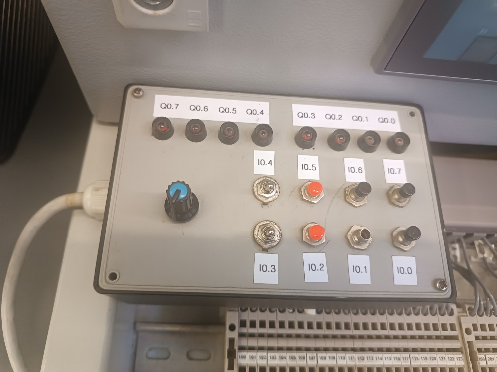
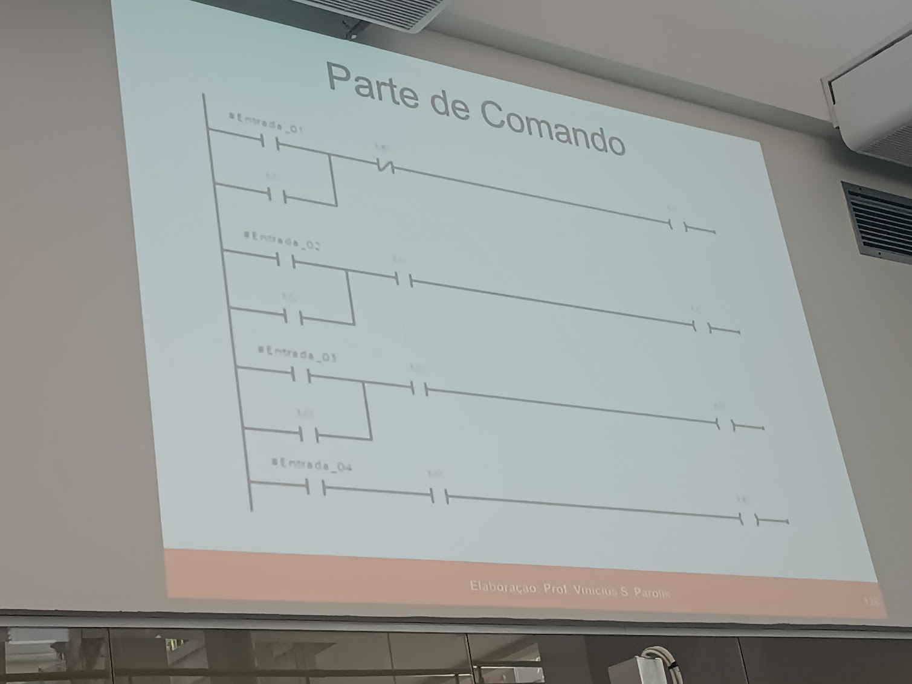

Lógica Ladder básica
Exercício introdutório com contatos, memória interna e saída digital, utilizado para observar a lógica de acionamento e retenção.
Formação introdutória concluída — SENAI — 40 horas

Concluí o curso CLP Siemens — TIA Portal na Escola SENAI “Anchieta”, em São Paulo, realizado entre 25 de junho e 8 de julho de 2026, com carga horária total de 40 horas.
A formação proporcionou um primeiro contato com controladores lógicos programáveis, automação de processos discretos, configuração de hardware e desenvolvimento de lógica no ambiente Siemens TIA Portal.
Por se tratar de um curso de curta duração, considero meu nível atual como introdutório. A experiência serviu para conhecer os principais elementos de um sistema com CLP e compreender melhor a relação entre entradas, processamento lógico e saídas.
Durante a formação, foram apresentados conceitos relacionados a:
Durante as aulas, tive contato com o CLP Siemens SIMATIC S7-1500, módulos de entrada e saída, painel didático e exercícios introdutórios de programação em Ladder. Os registros abaixo representam essa etapa inicial de aprendizado.

Exercício introdutório com contatos, memória interna e saída digital, utilizado para observar a lógica de acionamento e retenção.
Contato com a CPU Siemens SIMATIC S7-1500 e seus módulos, observando a organização física do controlador e a indicação dos canais em funcionamento.

Painel didático utilizado para relacionar botões e chaves de entrada com os sinalizadores correspondentes às saídas do controlador.

Estudo da representação de circuitos de comando em linguagem Ladder e da relação entre contatos, condições lógicas e bobinas de saída.
O curso ajudou a compreender que o CLP recebe informações dos dispositivos de entrada, executa uma lógica programada e controla os dispositivos ligados às saídas.
Também permitiu relacionar conceitos que eu já havia estudado em comandos elétricos com sua representação em lógica Ladder, ampliando minha visão sobre automação e controle de processos.
Não me considero programador ou especialista em CLP. Esta formação representa uma familiarização inicial com a tecnologia e uma base que poderá ser aprofundada em projetos e estudos futuros.
Durante o curso, produzi voluntariamente um material de apoio para ajudar um colega que não havia participado das primeiras aulas e estava com dificuldade para acompanhar o conteúdo.
O documento reúne registros e explicações introdutórias sobre a identificação do CLP Siemens S7-1500, configuração inicial do projeto no TIA Portal, inclusão da fonte, CPU e módulos, ajuste das versões de firmware e endereçamento básico de entradas e saídas digitais.
A elaboração do passo a passo também contribuiu para organizar meu próprio aprendizado e exercitar a capacidade de documentar e compartilhar conhecimentos técnicos.
Observação: este é um resumo pessoal de estudos, criado durante uma formação introdutória. O documento não é um manual oficial do SENAI ou da Siemens e não substitui a documentação técnica dos fabricantes.
Certificado de conclusão emitido pelo SENAI São Paulo, referente ao curso de 40 horas realizado entre 25 de junho e 8 de julho de 2026.